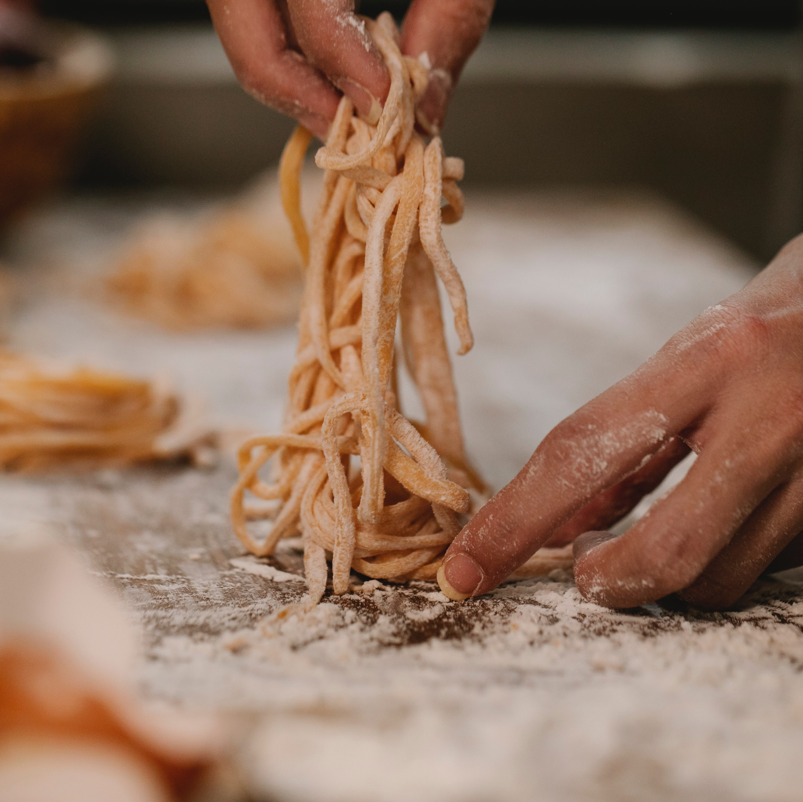
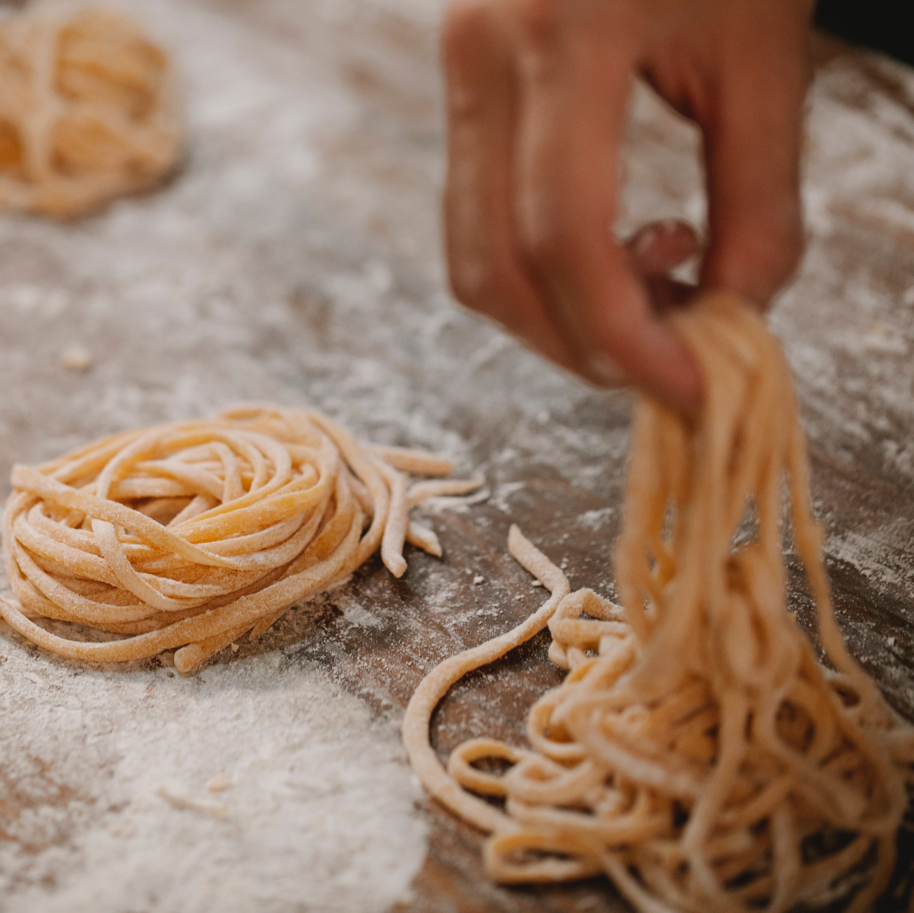
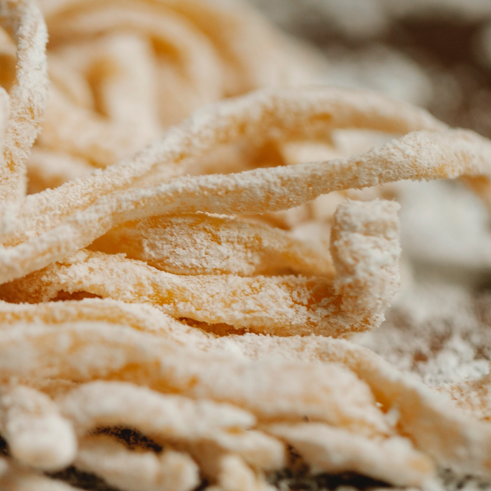
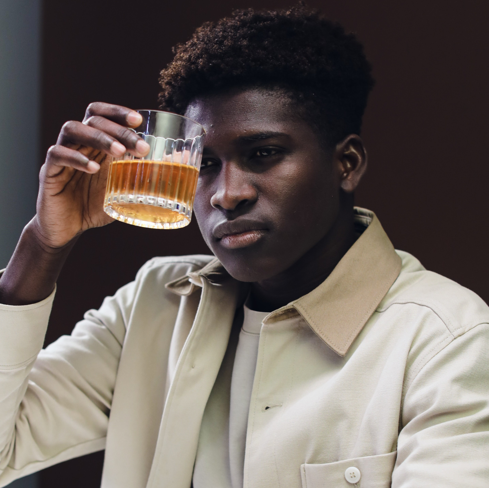
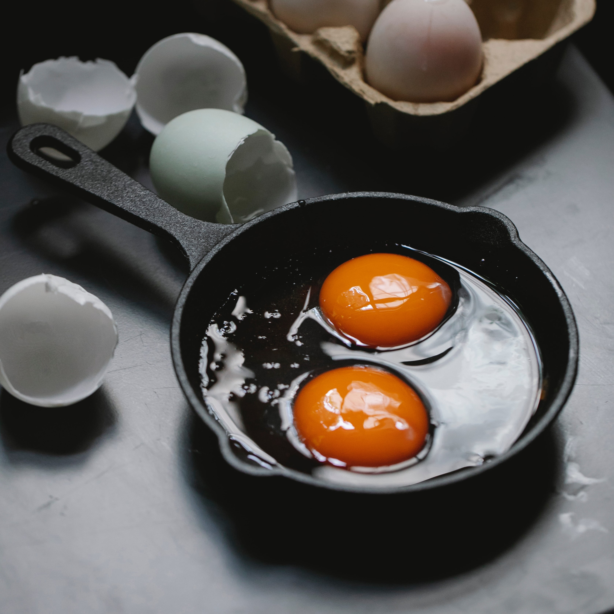
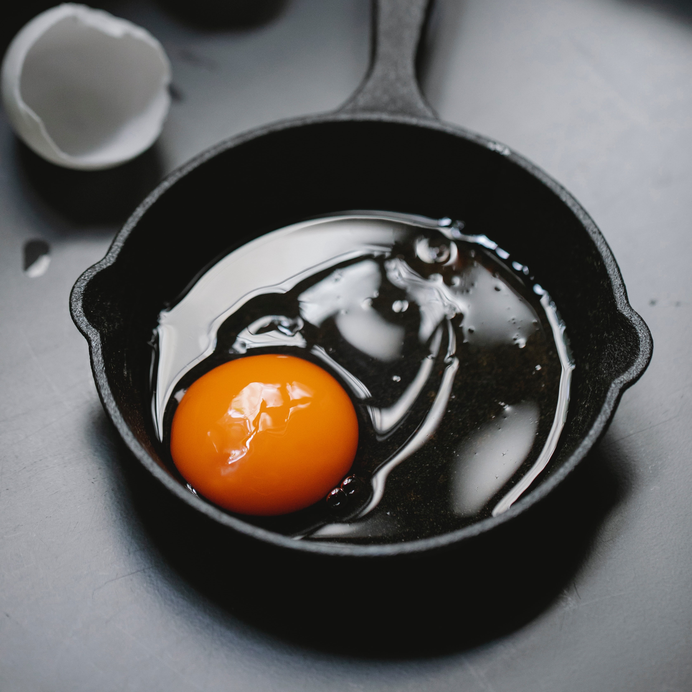
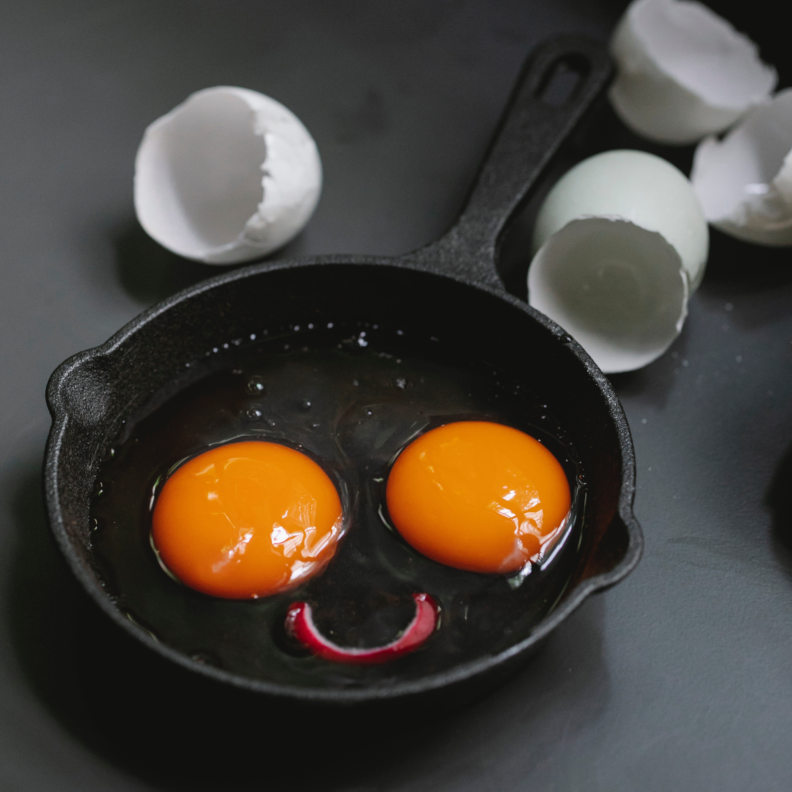
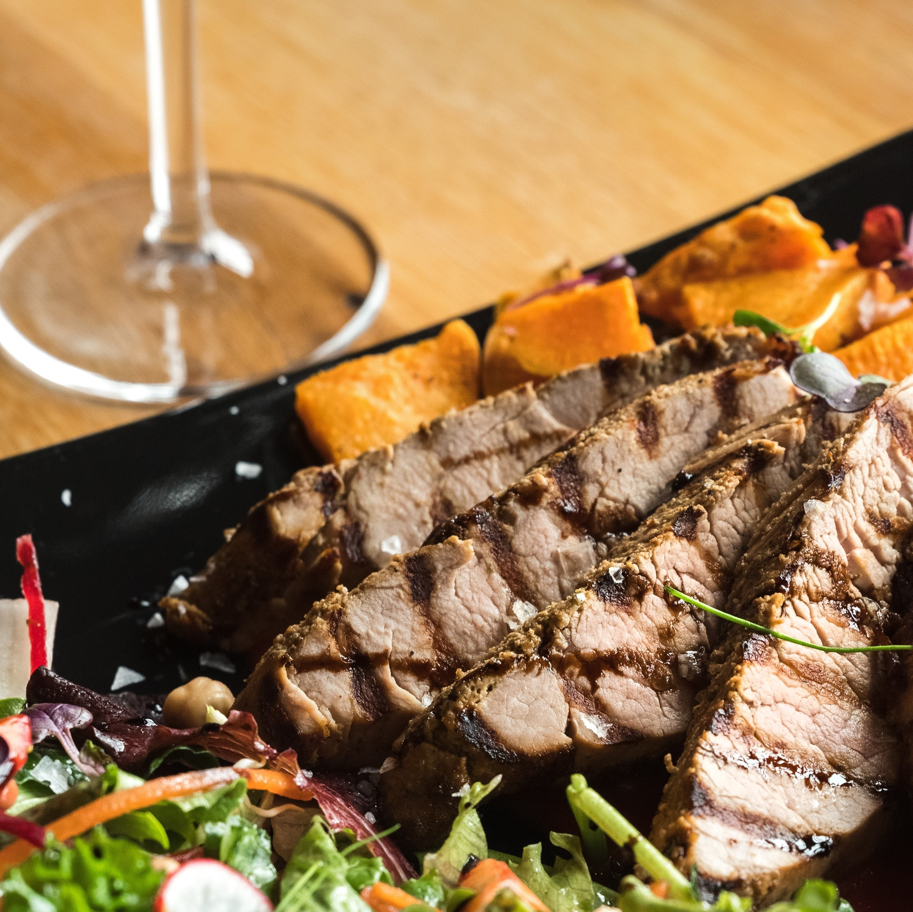

- Let us articulate your vision for your brand -
Eating is an on going part of our daily lives. Such a repetitive and meaningful task can also be turned into an experience. Dining is a luxury, so let us help you attract those who are seeking out these pleasures many are lucky to have.
The Pasta Workshop




Local Supper Club


Whisky Tasting and Brand Collaboration



Cast Iron Pan Promotion




Collaboration with Manchester Steak House


